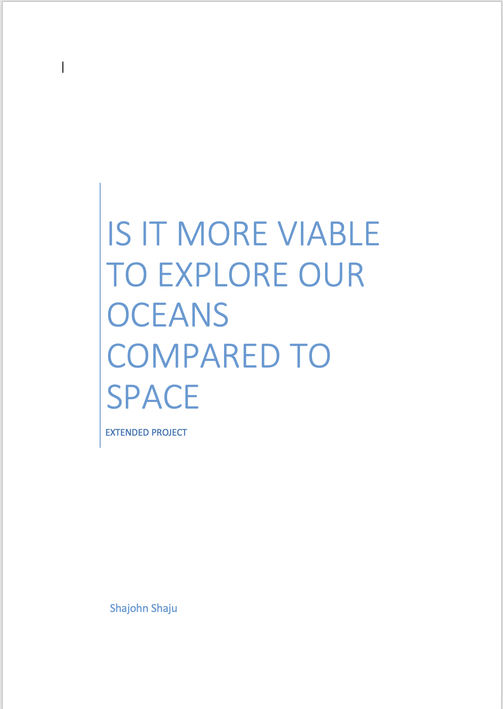
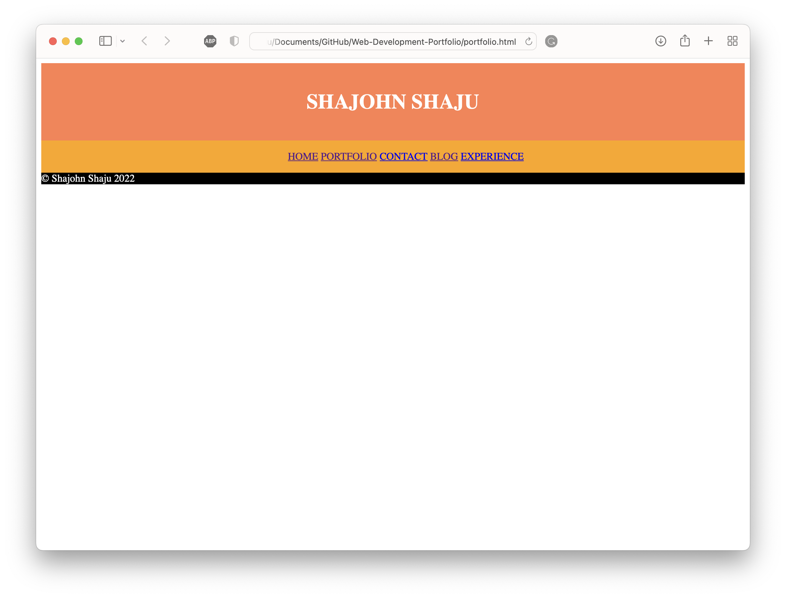
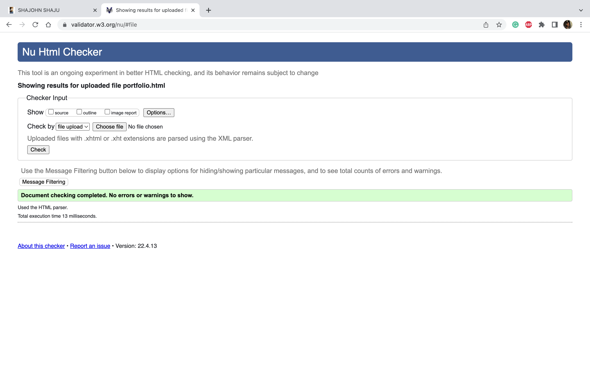

My Experience!
My experience at making a website using HTML and CSS was interesting.
I have made websites before, but with the use of website creation tools in the likes of Wix.com, which has drag and drop configurable entities which makes the process of creating a website very fluid. But this time around, coding the whole website and styling it from the core up was a vastly different experience. Positive? Certainly. Easy? Never.
But it did not come without any difficulties. My own personal experience with hardcore coding was minimal. I had only heard of HTML and CSS before, having no experience, I came into this expecting it to be mind boggling, though it was much easier than I had anticipated as a matter of fact. I was slow to get started, but it really helped that I had a lot of helpful guidance from my wonderful lecturer. I did my fair share of research too, looking through different portfolio websites to see what type of information was being outputted by people in the same industry. Through this, I was able to gather my thoughts on similarities I was seeing between the different portfolio websites such as the emphasis on their experience and how a good number of portfolios also came with an embedded blog page which the author regularly committed to writing an updated post with different topics.
I really like the ocean. For my A-Level Extended Project, I even did it on the topic: Is it more viable to explore our oceans compared to space. Based on this interest of mine, I concluded that I want to have an underwater/ in the ocean theme. So, I came up with a background design where the colour was blue in a gradient. This represents how the ocean is a light blue colour at the top but gets darker the further you travel down due to the reduction in light. Then I proceeded to create an animation of circles which start at random points around the screen and travel up to the top. The circles represent air bubbles, and the animation is supposed to be like the bubbles of air that you will find floating to the top of the ocean when you go scuba diving from your gear.
From here, to keep the design principle consistent, I used the same styling format throughout the website. This results in the fonts, the font colours, the font sizing, the font weight, the spacing, the footer, the header, the navigation bar, and the animations being the same consistently throughout the portfolio.

In addition to this, I took techniques that my lecturer taught, and I also watched videos on YouTube about different techniques that can be done with HTML and CSS. By doing so, I have implemented column layout and grid layout for my website. This can be found particularly when the website transitions into a mobile site from a desktop site as I have designed for it to change into a mobile friendly view with the use of principles found on mobile sites such as an optimised mobile menu that is accessed when pressing a hamburger button at the top of the page and also through other techniques such as dynamically sized boxes and text which will increase & decrease in size according to the pixel size of the screen.
In the process of making a portfolio, I ended up creating two different ones. I started working on my initial portfolio but as I was still getting used to HTML and CSS, I was doing some things wrong and because of this, I was hitting bottlenecks very quickly when I tried to implement more advanced animations into the site. The second portfolio was much different to the first one. In terms of design, it was miles better and the functionality of the site was great too. It also meant that there was less broken code for the go back over and fix.
Even so with a lot of guidance from my peers, I keep finding myself getting stuck in basic problems. A majority of this comes from my inability to re-check and re-read my own code properly as I end up rushing and I then skim read; which is a recipe for disaster. To improve on this, I am giving myself more time to work on the project so that I force myself to read through my work slowly to give me a chance to repair any broken code or rewrite any sections to optimise it.
I uploaded the source code for each page onto W3C Validator to check if my code is valid or not. The following images show that all my code is infact, valid.
Another difficulty that I experienced when designing my code was to do with git and github. I had a lot of trouble at first which was caused by me misconfiguring it on the first draft. Hence when I made it the second time around, I carefully made it and looked up advice on using github as well. I got myself familiarised with branches and commits and pull requests and pushing origin. This helped me to keep track of the different versions I have of my project and allows me to see what changes were made to the project on a regular basis and if needed I can download the entire project from github without having to worry about backing up my files onto multiple hardrives and such.
My project of creating a portfolio took me 35 days from start to finish. Actually, this is for the second draft of my portfolio that I started on the 11th of March. My first portfolio was created on the 8th of March. I feel that this project assignment was very fun for me as I really got to sit down and learn a new language or two (HTML and CSS). In the future, I plan to create another Portfolio for myself but with even more planning and a better, more advanced and intuitively designed features and functionatiies to show everything that I am capable of doing. I could've done a lot of things better. But I believe that part of the learning process is to make mistakes before being able to do it properly.